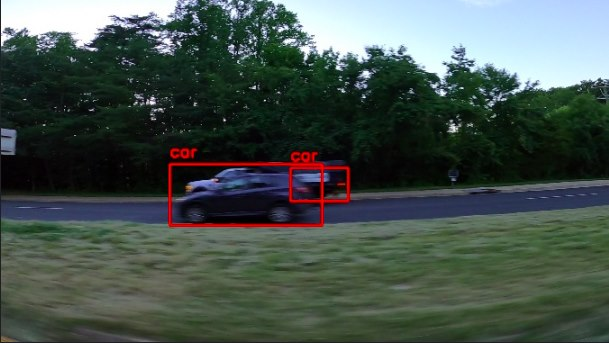
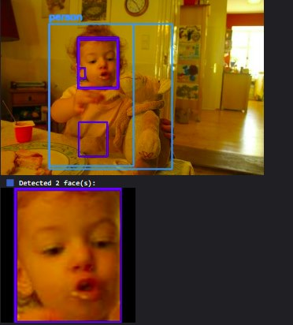

Pipeline CV Multi-Tahap
Arsitektur detect-then-classify untuk pengenalan objek berakurasi tinggi yang dioptimalkan khusus untuk edge deployment.
Masalah
Klien membutuhkan sistem pengenalan objek untuk inspeksi kualitas di lini industri. Tantangannya: ratusan kategori produk secara spesifik (fine-grained) yang sulit ditangani secara akurat oleh model detektor tunggal. Berbagai varian produk terlihat serupa pada tingkat kategori umum, namun menyimpan perbedaan detail yang krusial untuk penilaian kualitas.
Selain itu, sistem wajib beroperasi penuh pada perangkat edge: batasan latensi inferensi di bawah 100ms, terisolasi tanpa koneksi cloud, serta alokasi memori efisien di bawah 200MB.
Arsitektur
Mengapa Ini Sulit
- Pola detect-then-classify mereduksi kompleksitas kombinatorial: Daripada memaksakan satu model mengklasifikasikan seluruh kategori, detektor difokuskan untuk lokalisasi objek, sementara tiap classifier mengelola subset yang lebih spesifik. Pendekatan ini mempercepat proses pelatihan dan meningkatkan akurasi akhir.
- Batasan ketat pada edge deployment: Ekspor ONNX, kuantisasi model (INT8), serta manajemen memori yang efisien menjadi kebutuhan mutlak. Seluruh pipeline, termasuk alur pra dan pasca-pemrosesan, harus memenuhi toleransi latensi yang ketat.
- Ketidakseimbangan distribusi data antar kategori: Beberapa varian produk muncul jauh lebih sering dibandingkan varian lain. Penanganan ini membutuhkan penyesuaian fungsi loss, augmentasi data spesifik, dan pembuatan data sintetis.
- Strategi pembaruan model yang fleksibel: Ketika terdapat varian produk baru, pelatihannya tidak perlu mengulang dari awal secara keseluruhan. Arsitektur bertingkat ini memungkinkan penambahan modul classifier baru tanpa menggangu komponen detektor utama.
Tech Stack
- YOLOv8 + SSD: Deteksi objek yang dilatih dengan dataset kustom dan teknik augmentasi berbasis domain.
- PyTorch + TensorFlow: Pelatihan modul classifier kustom menggunakan arsitektur ResNet/EfficientNet.
- ONNX Runtime: Optimasi eksekusi inferensi pada perangkat edge.
- OpenCV: Pra-pemrosesan citra, ekstraksi area objek (crop), dan pasca-pemrosesan.
- Kuantisasi model: Kuantisasi INT8 yang mereduksi ukuran model hingga 4x lebih kecil dengan penurunan akurasi yang minim.
- Sistem evaluasi kustom: Pengukuran metrik per tahap, matriks konfusi, dan pemantauan latensi.
Di Dalam Sistem
Dua contoh keluaran. Keduanya menunjukkan perilaku dua tahap yang sama: deteksi mengusulkan area, lalu classifier menentukan isi tiap area. Contoh kedua menambahkan tahap pemotongan, sehingga setiap wajah yang terdeteksi diklasifikasikan sebagai input tersendiri.


Apa yang Akan Saya Lakukan Berbeda
- Mengeksplorasi YOLO-NAS atau RT-DETR: Arsitektur terbaru ini menawarkan rasio akurasi terhadap latensi yang lebih unggul untuk kebutuhan edge deployment.
- Menambahkan kelas penolakan (rejection class): Apabila classifier mendeteksi tingkat keyakinan yang rendah, sistem akan mengarahkan sampel tersebut ke peninjauan manual agar terhindar dari salah klasifikasi.
- Menerapkan active learning: Secara otomatis mengumpulkan sampel berpemberitahuan rendah untuk dilabeli ulang oleh pakar guna meningkatkan performa model secara berkelanjutan.
- Mengadopsi Triton Inference Server: Untuk manajemen multi-model di edge, Triton akan mempermudah penanganan pemuatan model, pembuatan versi, dan alur batching.
Pelajaran Utama
Strategi membagi masalah ke dalam beberapa tahap terpisah terbukti menghadirkan tingkat akurasi yang lebih tinggi, kemudahan pemeliharaan, serta fleksibilitas pembaruan antar tahap. Pendekatan ini kini menjadi standar utama saya dalam menangani berbagai permasalahan computer vision multi-class.
I'm open to full-time, contract, and freelance work.